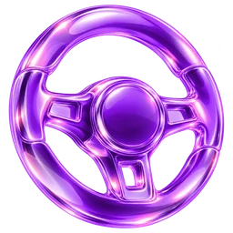

Разрабатываем технологии, которые двигают бизнес
Свои продукты для таксопарков — Fleet, GPS и PAY. И разработка на заказ для тех, кто возит людей, грузы и деньги.
Почему Safa One
 Всё пишем сами — сервер, интеграции с банком, приложения для iOS и Android.
Всё пишем сами — сервер, интеграции с банком, приложения для iOS и Android.
 Подключаемся к тому, что у вас уже есть:
, , , MyID и MUNIS. Резидент IT Park Uzbekistan.
Подключаемся к тому, что у вас уже есть:
, , , MyID и MUNIS. Резидент IT Park Uzbekistan.
Три продукта.Весь парк.


Safa Fleet — CRM для таксопарка. Заявки водителей из Telegram, Instagram, сайта и звонков — в одном списке, документы проверяются автоматически.
Водитель с машиной регистрируется в Яндекс одной кнопкой, парк сверяется с агрегатором.
Подключить паркSafa Fleet. Статус проверки документов и блокировка водителя при истёкших правах.

Safa GPS — мониторинг транспорта: живая карта, геозоны, история маршрутов, тревоги и удалённая блокировка двигателя. Приложение Safa GPS — в App Store и Google Play.
Поставить GPS на машиныSafa GPS. Трек машины за смену, стоянки и выезд из геозоны.

Safa PAY — выплаты водителям. Водитель сам выводит заработок, без кассы и звонков бухгалтеру.
На карту Uzcard или HUMO прямо из приложения или на счёт компании.
Подключить выплатыSafa PAY. Приложение водителя: баланс по паркам и вывод на карту.
Разработка на заказ
Fleet, GPS и PAY мы написали сами: сервер, банк, Яндекс, приложения для iOS и Android. Та же команда сделает продукт для вас.
- 01
 Мобильные приложенияiOS и Android, от прототипа до публикации в сторах и поддержки релизов.Сделали для себя Приложение водителя Safa PAY: вход по MyID, вывод на карту
Мобильные приложенияiOS и Android, от прототипа до публикации в сторах и поддержки релизов.Сделали для себя Приложение водителя Safa PAY: вход по MyID, вывод на карту - 02
 Веб-сервисы и платформыЛичные кабинеты, админки, панели управления, интеграции с оплатой.Сделали для себя Кабинет парка Safa Fleet и онлайн-карта Safa GPS
Веб-сервисы и платформыЛичные кабинеты, админки, панели управления, интеграции с оплатой.Сделали для себя Кабинет парка Safa Fleet и онлайн-карта Safa GPS - 03
 Backend и APIПроектирование данных, высоконагруженные сервисы, документированные API.Сделали для себя Выплаты Safa PAY через API банка и сверка с Яндексом
Backend и APIПроектирование данных, высоконагруженные сервисы, документированные API.Сделали для себя Выплаты Safa PAY через API банка и сверка с Яндексом - 04
 IoT и телематикаПриём и обработка данных с устройств, карты, геозоны, тревоги.Сделали для себя Трекеры и карта Safa GPS: от устройства до отчёта
IoT и телематикаПриём и обработка данных с устройств, карты, геозоны, тревоги.Сделали для себя Трекеры и карта Safa GPS: от устройства до отчёта - 05
 AI и автоматизацияРазбор документов, чат-боты, сценарии, снимающие ручную работу.Сделали для себя Автоблокировка водителей с истёкшими правами
AI и автоматизацияРазбор документов, чат-боты, сценарии, снимающие ручную работу.Сделали для себя Автоблокировка водителей с истёкшими правами - 06
 ИнтеграцииСвязываем то, что у вас уже работает, с тем, что нужно подключить.Сделали для себя Яндекс Fleet, Uzcard, HUMO, MyID, MUNIS — уже подключены
ИнтеграцииСвязываем то, что у вас уже работает, с тем, что нужно подключить.Сделали для себя Яндекс Fleet, Uzcard, HUMO, MyID, MUNIS — уже подключены


От задачи до запускаи поддержки
Анализ задачи
Разбираем процессы и цели. На выходе — ТЗ, срок и цена.
Проектирование и дизайн
Проектируем архитектуру и интерфейсы. Кликабельный прототип — до первой строчки кода.
Разработка и интеграции
Пишем код и подключаем платёжные системы, Яндекс Fleet и ваши сервисы. Рабочие версии — по этапам.
Запуск и поддержка
Публикуем в App Store и Google Play, обучаем команду и сопровождаем продукт после запуска.


Обсудимваш проект.
Узбекистан, г. Ташкент, Юнусабадский район, махалля Mirzo Ulugʻbek,
ул. Xalqobod-2, д. 65/6
Заявка отправлена.
Спасибо! Заявка у нас, скоро свяжемся.